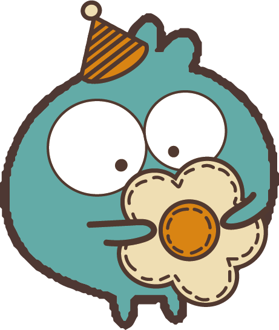

你的聖誕可愛鬼是......夢遊小魔!🛏️

-----------------------------------------
他喜歡穿著自己織的的睡衣到處亂晃，手上總是拿著心愛的枕頭。
這位小魔可能一直處於夢遊狀態，對時間的流動有點不敏感，對於聖誕節的一切都感到模糊不清。
它可能會在聖誕樹旁邊漫無目的地遊蕩，如果有人經過，他可能會突然問一句:聖誕節到了嗎?
-----------------------------------------
與你合得來的聖誕可愛鬼有......克里希克拉赫
點選文字看看你的可愛好朋友是誰!
重新測驗